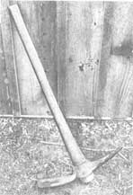

-BRAXTON EIKENBERRY-
A grubber is a very useful - and seemingly forgotten - farmstead implement . . . with a double-ended head that's shaped like a pick on one tip and looks like an elongated adze on the other.
I've used my grub hoe to dig rows for planting seeds, potatoes, and the like . . . and to remove rocks, old tree stumps, half-buried fences, and whatever else gets in the way. In fact, I've even known folks to use a grubber to open cans of motor oil (though that task requires a delicate touch).
If you can't find a grub hoe in your local hardware store, don't despair. There are a few outfits that still stock 'em. The Cumberland General Store in Tennessee, for instance, has a great "dream book" of a catalog, which lists grub hoes along with a lot of other useful items. (For a copy of the book, send $3.00 - along with your name and address - to Cumberland General Store, Dept. TMEN, Route 3, Crossville, Tennessee 38555.)
However, if you want to save money, you can probably locate a second-hand tool. I bought mine - for $3.00 - from an antique store . . . and pocketed a $7.00 saving over the average $10 price tag for a new implement. I've seen other grubbers (some in excellent condition) be auctioned off for even less than I spent, too!
All in all, the grubber is a darn handy tool ... I'd sure hate to do without mine!
|
 |
|
|